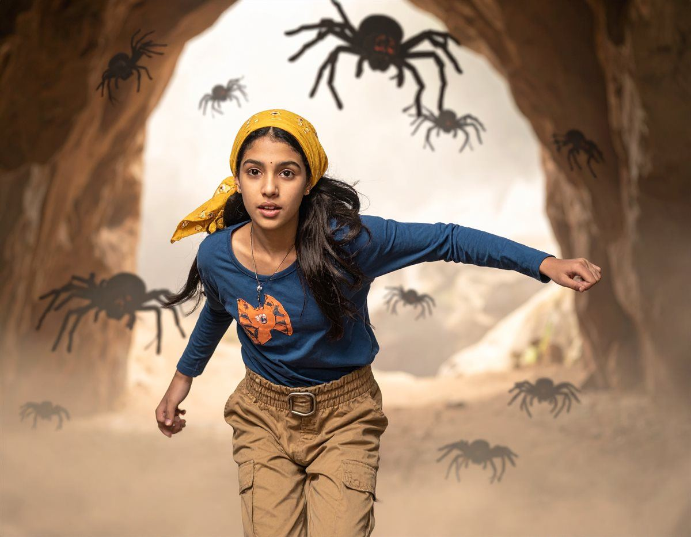

The narrow path twisted up the side of the mountain, and Patricia carefully
picked her way across the uneven rocks. Her dark hair whipped around her face in the chilly mountain breeze
as she approached the cave entrance. It was much larger than she had expected, its jagged edges disappearing
into the shadows within. She paused for a moment, studying the darkness. Something about the cave made her
uneasy, but after everything she had been through on her search for her uncle, she wasn't about to turn back
now. Taking a deep breath, she stepped closer. As she edged towards the entrance, she noticed strange,
silvery threads stretched between the rocks. Spiderwebs. Hundreds of them. They covered the cave walls like
tangled blankets, glistening faintly in the light. Suddenly, a low, scratching noise echoed from somewhere
inside. She froze. Another scratching sound followed, this time much closer. Before she could react, a
gigantic, hairy spider scuttled out of the darkness, its eight legs clicking against the stone. Then another
appeared. And another.Her heart lurched as the spiders began pouring out of the cave. Some were as large as
dogs, their enormous bodies covered in coarse black fur and their many eyes glinting in the dim light. She
stumbled backwards, barely managing to keep her balance as they rushed towards her.
passing second.
|  |
|
 |
Without thinking, Patricia spun around and sprinted down the narrow mountain
path. Behind her, the clicking of hundreds of tiny feet grew louder. She could hear the spiders scrambling
over the rocks, gaining on her with every passing second. She glanced over her shoulder, desperate to see how far behind they were, but
her foot caught on a loose rock. With a startled cry, she lost her balance and tumbled down the steep, uneven
slope. Pain shot through her leg as she landed awkwardly against a cluster of rocks. She tried to push
herself upright, but the moment she put weight on her leg, a sharp pain forced her back down. Her breathing
quickened as she looked towards the path. The spiders were still approaching. Summoning every bit of strength
she had, she dragged herself towards a large boulder and managed to scramble behind it, hoping the spiders
wouldn't notice her. Eventually, the clicking faded, and the mountain fell silent once more. She waited
several moments before cautiously peering out from behind the boulder. The spiders had disappeared back into
the cave, leaving only their silvery webs swaying gently in the breeze. She let out a shaky breath, relieved
that the terrifying creatures were gone. However, as she looked down at her leg, her relief quickly turned
to worry. She knew she wouldn't be continuing her adventure anytime soon. |